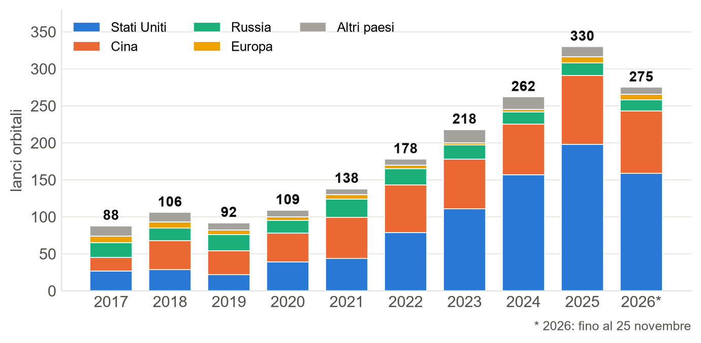
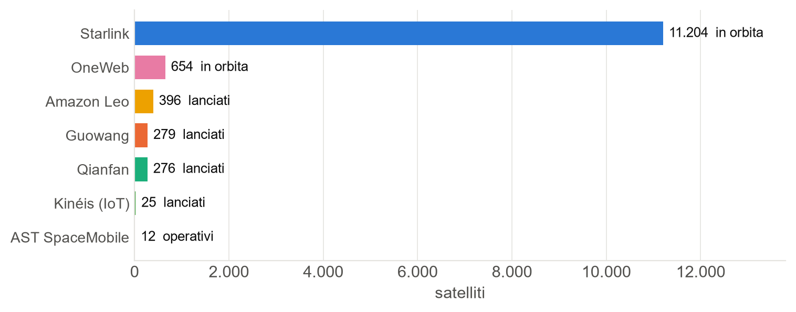
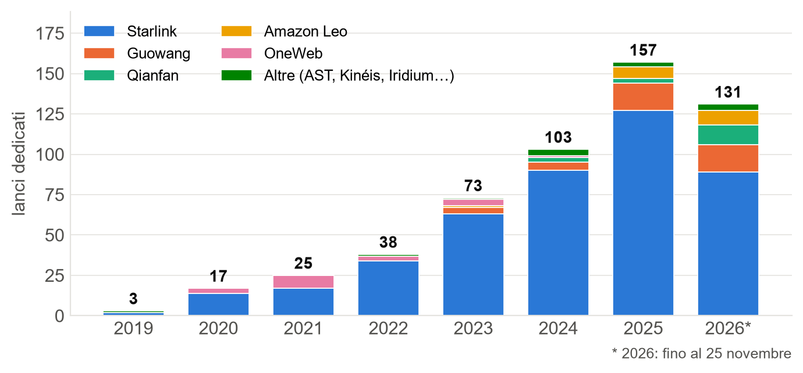
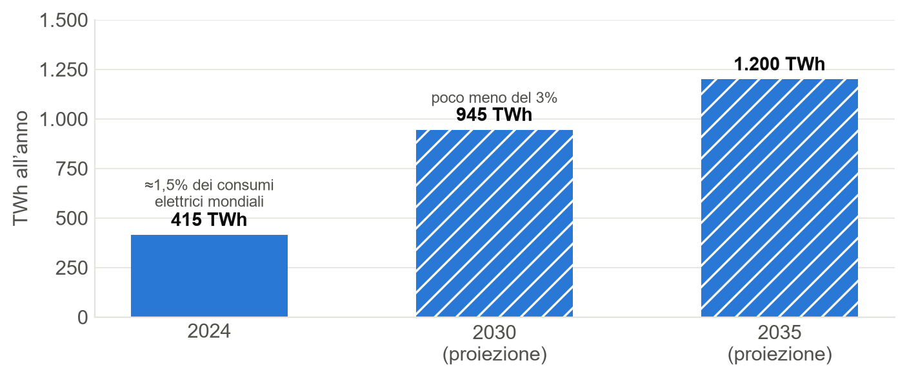
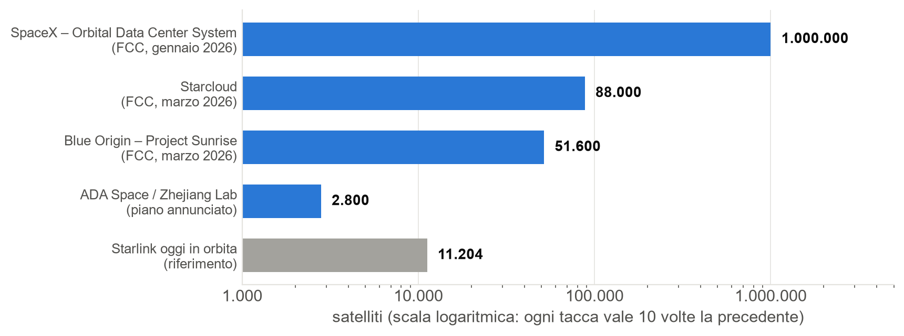
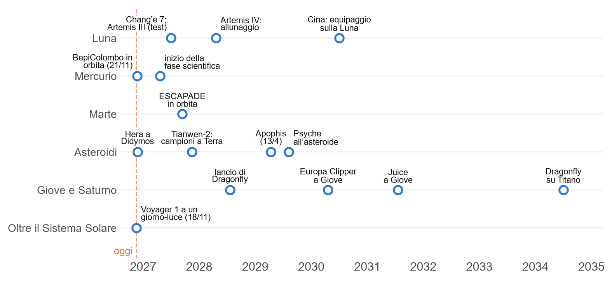

Lo spazio a fine 2026: lanciatori, costellazioni, data center orbitali e missioni
- lanciatori
- SpaceX
- costellazioni satellitari
- Europa
- data center orbitali
- esplorazione
- dati aperti
Il 2026 è l'anno in cui lo spazio è diventato infrastruttura: i lanci hanno superato quota 300 l'anno, le costellazioni in orbita bassa contano decine di migliaia di satelliti, si progettano data center in orbita e una società spaziale, SpaceX, è diventata la più grande quotazione in borsa della storia.
Questa pagina raccoglie una sintesi di quattro approfondimenti condotti nel 2025-2026, aggiornati a novembre 2026 con una base dati dei lanci orbitali costruita da fonti aperte. Le domande sono quattro:
- Lanciatori: chi va nello spazio, con quali razzi, a che ritmo?
- Costellazioni: chi controlla l'orbita bassa, e che spazio resta all'Europa?
- Data center: ha senso portare il calcolo per l'intelligenza artificiale in orbita?
- Missioni: a che punto è l'esplorazione della Luna e del Sistema Solare?
I dati sui lanci sono aggiornati al 25 novembre 2026.
1. Premessa
Per sessant'anni lo spazio è stato un affare di Stati: pochi lanci all'anno, razzi a perdere, missioni costose e rare. In meno di dieci anni il quadro si è rovesciato. Il riutilizzo dei razzi ha abbattuto i costi di accesso all'orbita, e le aziende private sono diventate i principali clienti di sé stesse: chi costruisce lanciatori mette in orbita le proprie costellazioni, e chi gestisce costellazioni compra i lanciatori.
Ne derivano tre conseguenze che attraversano tutta la pagina:
- Concentrazione: un solo operatore, SpaceX, effettua più della metà dei lanci mondiali e gestisce circa due satelliti attivi su tre.
- Competizione tra potenze: la Cina cresce con decine di vettori diversi e due mega-costellazioni nazionali; l'Europa ha competenze di eccellenza ma scala e cadenza ridotte.
- Nuovi usi: dopo comunicazioni e osservazione della Terra, l'orbita diventa il possibile luogo del calcolo per l'intelligenza artificiale, alimentato dal Sole.
L'esplorazione scientifica prosegue in parallelo, con un 2026 ricco di tappe: il ritorno di un equipaggio attorno alla Luna, l'arrivo di BepiColombo a Mercurio, Voyager 1 a un giorno-luce dalla Terra.
Torna su2. Spazio: a che punto siamo?
Quanti lanci, con quali razzi e chi guida la corsa all'orbita?
Il quadro d'insieme
- 330lanci orbitali nel mondo nel 2025, record storico (erano circa 90 nel 2017)
- 170lanci di SpaceX nel 2025: più di tutti gli altri operatori del mondo messi insieme
- 93lanci della Cina nel 2025, con oltre venti tipi di vettore diversi
- 8lanci dell'Europa nel 2025: Ariane 6, Vega-C e il primo volo di prova di Spectrum
Lanci per paese
La crescita è trainata dagli Stati Uniti, cioè da SpaceX, e dalla Cina, che insieme fanno quasi il 90% dei lanci. La Russia è in calo, Europa, Giappone e India restano sotto i dieci lanci l'anno ciascuno.

I lanciatori che contano
| Lanciatore | Paese | Lanci 2025 | Lanci 2026* | Note |
|---|---|---|---|---|
| Falcon 9 | Stati Uniti | 165 | 123 | Primo stadio riutilizzabile, recuperato in quasi ogni volo: il cavallo da tiro dell'orbita |
| Starship | Stati Uniti | 5 | 4 | Il razzo più grande mai costruito: prima orbita il 28/9/2026, prima cattura dello stadio superiore il 13/11/2026 |
| Electron | Nuova Zelanda / Stati Uniti | 18 | 18 | Il piccolo lanciatore di Rocket Lab; il più grande Neutron è atteso nel 2027 |
| Famiglia Lunga Marcia | Cina | ≈70 | ≈57 | Oltre venti varianti; accanto crescono i vettori commerciali (Zhuque, Kinetica, Jielong) |
| Soyuz-2 | Russia | 13 | 13 | Ancora l'unico accesso russo con equipaggio alla Stazione Spaziale |
| New Glenn | Stati Uniti | 2 | 1 | Blue Origin: primo stadio recuperato nel novembre 2025, ma un fallimento ad aprile 2026 |
| Ariane 6 e Vega-C | Europa | 7 | 7 | Accesso autonomo europeo all'orbita, senza riutilizzo |
* 2026 fino al 25 novembre.
Il nodo europeo
L'Europa ha riconquistato l'accesso autonomo all'orbita dopo la crisi del 2023-2024, ma lancia un decimo della Cina e circa un ventesimo di SpaceX, e non ha ancora un lanciatore riutilizzabile in servizio. Senza cadenza e riutilizzo, costellazioni e missioni europee continuano in parte a dipendere da razzi altrui.
Torna su3. Costellazioni satellitari
Chi controlla l'orbita bassa, e quale ruolo resta all'Europa?
Il quadro a novembre 2026
- Starlink≈11.200satelliti in orbita e 13,6 milioni di abbonati (30/9/2026)
- Cina≈555satelliti lanciati per Guowang (279) e Qianfan (276), le due mega-costellazioni nazionali
- Amazon Leo396satelliti in orbita, lanciati con Atlas V, Falcon 9 e Ariane 6; 40 persi nel fallimento del Vulcan del 15/11
- IRIS²348satelliti previsti dalla costellazione europea; primo lancio nel 2029
I satelliti in orbita bassa, sotto i 1.200 km di quota, offrono connettività a larga banda e bassa latenza: internet dove non arrivano le reti terrestri, collegamento di navi e aerei, comunicazioni militari e ora anche il collegamento diretto con i normali telefoni cellulari. È una tecnologia commerciale e insieme strategica, come ha mostrato la guerra in Ucraina.

La corsa si legge anche nei lanci: quasi metà dei lanci mondiali serve oggi a costruire costellazioni. Nel 2026 crescono soprattutto le costellazioni cinesi e Amazon Leo.

Il caso Starlink
Starlink è il riferimento perché unisce scala, controllo della filiera ed evoluzione continua: in sette anni SpaceX ha messo in orbita cinque generazioni di satelliti, ciascuna più grande e capace della precedente, che restano in servizio circa cinque anni e poi rientrano bruciando in atmosfera.
| Generazione | Anni | Massa | Capacità | Novità |
|---|---|---|---|---|
| v1.0 | 2019–2021 | ≈260 kg | ≈20–25 Gbit/s (stima) | Prima serie operativa, propulsori elettrici a kripton |
| v1.5 | 2021–2023 | ≈300 kg | n.d. | Collegamenti laser tra satelliti |
| v2 mini | dal 2023 | ≈740–800 kg | ≈96 Gbit/s (stima) | Pannelli di ≈120 m², propulsori ad argon, collegamento diretto ai telefoni |
| V3 | dal 2026 | 1,5–2 t (stima) | 1 Tbit/s (dichiarato) | Solo con Starship: 52 satelliti in orbita con i voli di settembre e novembre 2026 |
Lanciatori e satelliti sotto lo stesso tetto
Il filo conduttore del 2026 è l'integrazione verticale. SpaceX costruisce razzi e satelliti e vende il servizio; Amazon si appoggia a Blue Origin. A giugno 2026 Rocket Lab ha annunciato l'acquisizione di Iridium per circa 8 miliardi di dollari, per diventare anche operatore di rete. In Europa il movimento va nella direzione opposta: il 17 novembre 2026 la finlandese ICEYE, che gestisce satelliti radar, ha lanciato un'offerta pubblica di acquisto su Avio, costruttore del Vega-C, per circa 2 miliardi di euro, soggetta al golden power del governo italiano.
Le costellazioni europee
L'Europa ha programmi di eccellenza, soprattutto nell'osservazione della Terra (IRIDE, operativa da luglio 2026, e ICEYE), e una costellazione a banda larga, OneWeb di Eutelsat. Il progetto bandiera è IRIS²: 348 satelliti in orbita bassa e media per comunicazioni governative sicure, servizi dal 2030. Airbus, Leonardo e Thales hanno inoltre concordato di unire le loro attività satellitari nella società Bromo, in attesa del via libera antitrust. Le debolezze restano tre: scala e tempi (IRIS² avrà i primi satelliti quando Starlink ne conta già oltre undicimila), dipendenza dai lanciatori altrui e frammentazione tra programmi dell'Unione, nazionali e aziendali.
Torna su4. Data center nello spazio
Ha senso portare il calcolo per l'intelligenza artificiale in orbita, dove l'energia solare è quasi continua?
Il problema: l'energia
I data center per l'intelligenza artificiale passano dai megawatt ai gigawatt, la taglia delle grandi centrali elettriche, che richiedono anni per essere costruite e allacciate. Secondo l'Agenzia Internazionale dell'Energia i consumi dei data center raddoppiano entro il 2030.

In orbita eliosincrona un pannello solare è illuminato quasi di continuo e può produrre fino a otto volte l'energia che produrrebbe a terra; il calore si disperde per irraggiamento, senza consumo di acqua. Gli ostacoli sono altrettanto concreti: costo dei lanci, grandi radiatori, radiazioni, impossibilità di riparare i guasti, banda limitata verso terra.
Il 2026: dalle prove alle mega-costellazioni
- 1 milionedi satelliti chiesti da SpaceX alla FCC (gennaio 2026) per lo «SpaceX Orbital Data Center System»
- 75 mld $raccolti da SpaceX con la quotazione al Nasdaq del 12 giugno 2026, a una valutazione di circa 1.750 miliardi
- 4 TPUin orbita dal 1° ottobre 2026 con il primo prototipo del progetto Suncatcher di Google
- 20satelliti di calcolo cinesi in orbita, su 2.800 previsti

SpaceX: la quotazione e il milione di satelliti
A febbraio 2026 SpaceX ha incorporato xAI, la società di intelligenza artificiale di Elon Musk, motivando l'operazione proprio con il calcolo in orbita. Il prospetto di quotazione prevede i satelliti di calcolo «AI1» dal 2028 e un obiettivo di 100 gigawatt di capacità aggiunta ogni anno, ma avverte che il progetto potrebbe non essere sostenibile e che sarà conveniente solo con Starship completamente riutilizzabile. Una parte rilevante del valore di borsa di SpaceX è dunque una scommessa sul calcolo in orbita.
Un confronto: 100 MW in orbita e a terra
Per dare un ordine di grandezza, ecco un data center ipotetico in orbita («StarMind») confrontato con uno terrestre di pari potenza. Le cifre sono stime indicative.
| Voce | Sulla Terra | In orbita |
|---|---|---|
| Energia | ≈1,1 TWh l'anno dalla rete, ≈85–90 mln $ l'anno | Solare quasi continuo, nessun costo di energia |
| Superficie | 10–20 ettari, più la centrale | Pannelli ≈0,4 km² e radiatori ≈0,1 km² |
| Acqua | Fino a ≈1,5 miliardi di litri l'anno | Nessuna |
| Lanci | – | 1.000–2.500 t, cioè 10–25 voli di Starship |
| Costo annuo del «trasporto» dell'energia | – | 40–100 mln $ a 200 $/kg; 7–17 volte di più ai prezzi attuali |
| Vita e manutenzione | 15–20 anni, chip sostituibili | ≈5 anni, nessuna riparazione |
| Emissioni di CO₂ | ≈400.000 t l'anno (mix elettrico USA) | ≈30.000–75.000 t una tantum per i lanci |
Il conto si chiude solo se il costo di lancio scende verso i 200 dollari al chilogrammo: lo spazio vince su acqua, suolo, emissioni e tempi di allacciamento, la Terra su costi attuali, manutenzione e collegamenti.
Torna su5. Missioni nello spazio profondo
A che punto è l'esplorazione della Luna, dei pianeti e degli asteroidi?
Le tappe del 2026
- LunaArtemis IIquattro astronauti attorno alla Luna (1–10 aprile 2026), il primo equipaggio oltre l'orbita terrestre dal 1972
- Mercurio21/11BepiColombo (ESA-JAXA) entra in orbita attorno a Mercurio dopo otto anni di viaggio
- Oltre il Sistema Solare1 giorno-lucela distanza di Voyager 1 dalla Terra il 18 novembre 2026, dopo 49 anni di viaggio
- Esopianeti6.000+pianeti extrasolari confermati, con altri 8.000 candidati
Luna
Il 2025 ha visto il primo allunaggio commerciale pienamente riuscito (Blue Ghost di Firefly) e due fallimenti. Dopo Artemis II la NASA ha rivisto il programma: Artemis III, nel 2027, proverà in orbita terrestre i lander di SpaceX e Blue Origin, e il primo allunaggio con equipaggio è previsto con Artemis IV nel 2028. La Cina punta a portare astronauti sulla Luna entro il 2030; la missione Chang'e 7 verso il polo sud è stata rinviata al 2027.
Pianeti e asteroidi
Verso Marte viaggiano le due piccole sonde ESCAPADE, lanciate dal New Glenn, che arriveranno nel 2027; la finestra di lancio di fine 2026 per i primi Starship verso Marte non è stata sfruttata. Verso Giove sono in viaggio Juice (ESA) ed Europa Clipper (NASA), per studiare le lune che nascondono oceani sotto il ghiaccio. Sugli asteroidi, la cinese Tianwen-2 ha raggiunto la piccola «quasi-luna» Kamoʻoalewa per riportarne campioni nel 2027, e l'europea Hera sta arrivando al sistema Didymos-Dimorphos, deviato nel 2022 dall'impatto della sonda DART. A luglio 2025 è stato scoperto il terzo visitatore interstellare, la cometa 3I/ATLAS.
Le prossime tappe

6. Conclusioni
- Lo spazio è diventato infrastruttura. Più di 300 lanci l'anno, decine di migliaia di satelliti attivi e servizi usati ogni giorno da milioni di persone: l'orbita bassa è ormai parte della rete, come la fibra e le centrali.
- La riutilizzabilità decide tutto. Il costo di lancio governa la convenienza delle costellazioni, dei data center orbitali e delle missioni verso Luna e Marte. Per questo i voli di Starship del 2026 contano più di qualsiasi annuncio.
- La concentrazione è il rischio principale. Un solo operatore controlla lanci, costellazioni e ora anche un pezzo del calcolo per l'intelligenza artificiale, e il suo valore di borsa dipende in parte da progetti non ancora dimostrati.
- L'Europa deve scegliere la scala. Ha competenze di eccellenza, ma programmi frammentati e cadenze ridotte. Le operazioni del 2026, da Bromo all'offerta di ICEYE su Avio, sono tentativi di raggiungere la dimensione necessaria.
- L'esplorazione resta un bene comune. Artemis, BepiColombo, Juice, Hera e Voyager mostrano che la cooperazione scientifica internazionale continua a produrre risultati straordinari, anche in un contesto più competitivo.
Fonti e precisazioni
I dati sui lanci sono stati estratti dalle liste dei lanci di Wikipedia (consultate il 17 novembre 2026), consolidati e verificati con fogli di lavoro dell'autore; gli altri dati provengono da fonti aperte, verificate il 17 novembre 2026. Le attività di estrazione, rielaborazione e presentazione dei dati sono state supportate da strumenti di intelligenza artificiale.
- Wikipedia, liste dei lanci per vettore e per anno: base dati dei lanci 1979–2026.
- Starlink, satelliti V3 e Wikipedia, lanci Starlink: generazioni e numero di satelliti.
- IEA, Energy and AI (2025): consumi dei data center.
- FCC, avviso DA 26-113: domanda di SpaceX per un milione di satelliti.
- SEC, prospetto di quotazione di SpaceX (Form S-1, 2026).
- Google Research, Project Suncatcher (2025) e primo prototipo in orbita (2026).
- NASA, nuovo calendario Artemis e Artemis II.
- BepiColombo, Voyager 1 a un giorno-luce, ESA, Hera.